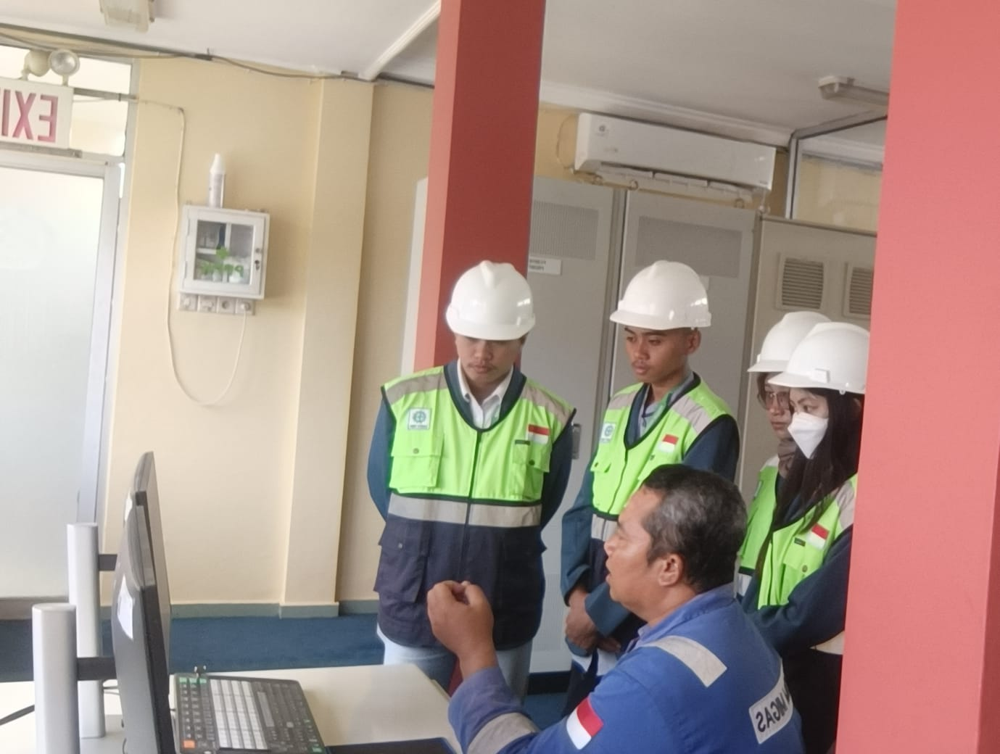

Internship Experience
Work Experience

Laboratory Data Analyst Assistant
Department of Physics
- Guided students in processing, cleaning, and analyzing experimental datasets using Microsoft Excel and Python to support accurate data interpretation.
- Assisted students in validating experimental data against predefined parameters to ensure data accuracy and consistency.
- Provided technical guidance on data processing methods, statistical calculations, and analytical result interpretation.
- Assisted students in organizing and presenting experimental results through structured data summaries and visualizations.
- Monitored students' data analysis progress and provided feedback to improve the accuracy and reliability of their analytical results.